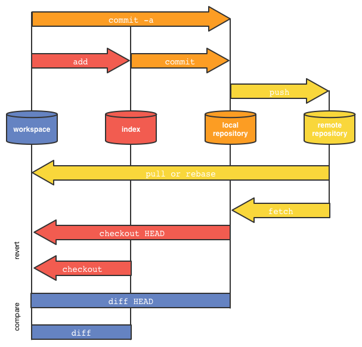
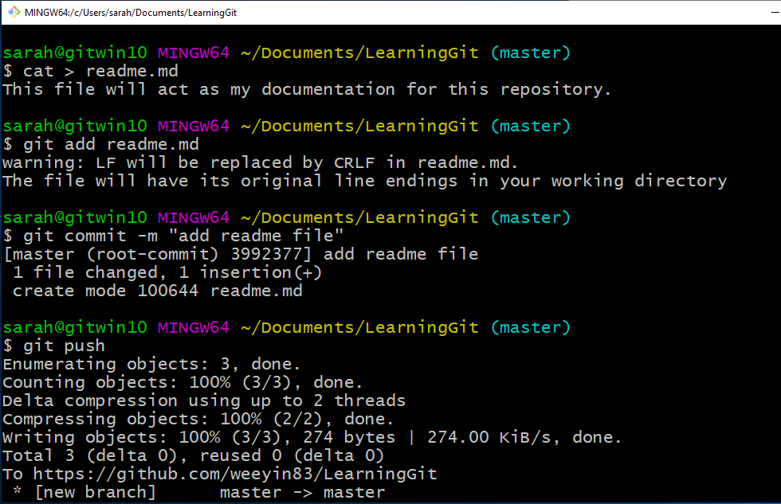
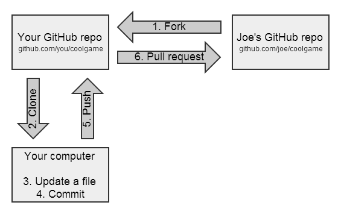
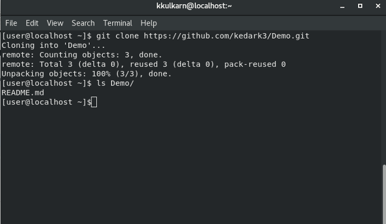
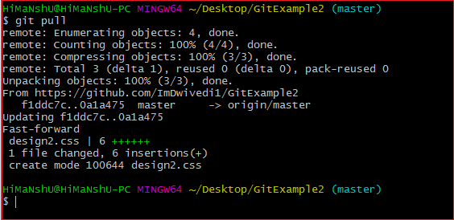

Working with Git on the command line can be daunting. To help with that, we’ve put together a list of common Git commands, what each one means, and how to use them. Our hope is that this makes Git easier to use on a daily basis.
Git has many great clients that allow you to use Git without the command line. Knowing what actions the client is performing in the background is beneficial to understanding how Git works. If you’re getting started with Git also check out our fantastic guide on the topic.

git commit
Record the changes made to the files to a local repository. For easy reference, each commit has a unique ID.
It’s best practice to include a message with each commit explaining the changes made in a commit. Adding a commit message helps to find a particular change or understanding the changes.

git push
Sends local commits to the remote repository. git push requires two parameters: the remote repository and the branch that the push is for.
git fork
A fork is a copy of a repository. Forking a repository allows to freely experiment with changes without affecting the original project.

git clone
To create a local working copy of an existing remote repository, use git clone to copy and download the repository to a computer. Cloning is the equivalent of git init when working with a remote repository. Git will create a directory locally with all files and repository history.

git pull
To get the latest version of a repository run git pull. This pulls the changes from the remote repository to the local computer.

git merge
Integrate branches together. git merge combines the changes from one branch to another branch. For example, merge the changes made in a staging branch into the stable branch.